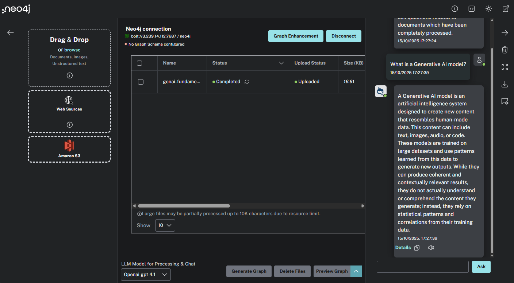
Neo4j LLM Graph Builder
In this lesson, you will use the LLM Graph Builder to construct a simple knowledge graph.
LLM Graph Builder
The Neo4j LLM Graph Builder is a tool for turning unstructured data into a knowledge graph. It automates the same process described in the previous lesson and builds graphs from text.
The LLM Graph Builder includes a chat interface to interact with the graph and explore the data. The chatbot can use different Retrieval Augmented Generation (RAG) approaches to answer questions, including GraphRAG, Vector Search, and Text2Cypher.
You can upload text-based documents and import text directly from Wikipedia and YouTube.
The LLM Graph Builder allows you to configure the LLM model, the types of entities and relationships, and a pre-defined schema.
|
Important
|
Neo4j Labs project
The Neo4j LLM Graph Builder is a Neo4j Labs project is under active development, and features may change.
|
You can learn more in the Neo4j LLM Graph Builder documentation.
Create a Knowledge Graph
You will use the LLM Graph Builder to create a knowledge graph of the GraphAcademy course content. You can then ask questions about the course content and explore the relationships between the different topics.
To complete this task, you will need to:
-
Connect the LLM Graph Builder to a Neo4j database
-
Upload the course content
-
Generate the knowledge graph
Connect to Neo4j
When you open the Neo4j LLM Graph Builder, you will be prompted to Connect to Neo4j. The LLM Graph Builder will create your knowledge graph in this database.
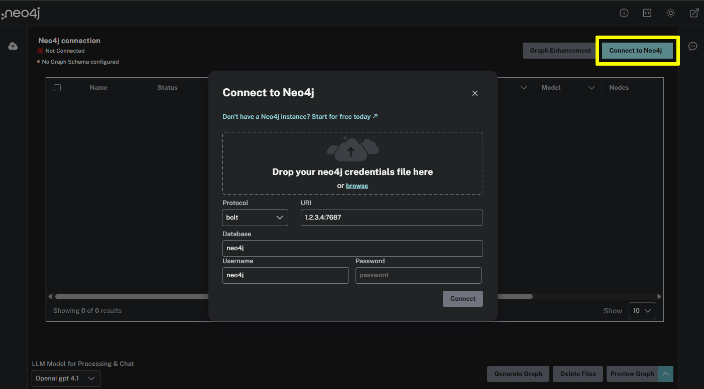
kgbuilder::Open Knowledge Graph Builder[]
You can use the Neo4j Sandbox that was created for you when you enrolled in the course:
- Protocol
-
neo4j+s
- URI
-
YOUR_NEO4J_HOST:7687
- Database
-
neo4j
- Username
-
neo4j
- Password
-
YOUR_PASSWORD
Ensure you have the correct connection details and connect.
Upload the course content
You will use the lessons from the Neo4j & Generative AI Fundamentals course. We have converted the lessons into PDF documents so you can upload them.
Download the PDF file for lesson 1 - What is Generative AI.
Use Upload files to upload the PDF file to the LLM Graph Builder.
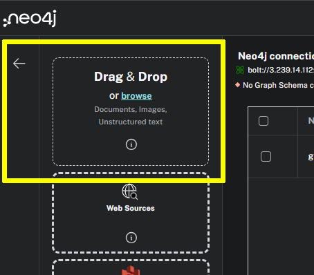
The file will uploaded and added to the list of documents.
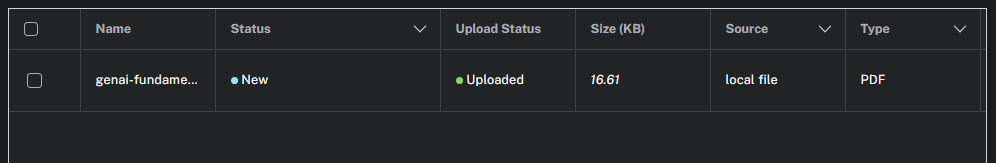
|
Tip
|
Uploading multiple documents
You can upload multiple documents to the LLM Graph Builder to be processed together.
When creating a knowledge graph, uploading a single document to test the process is often helpful.
|
Once you have uploaded the document, you can create the knowledge graph using the Generate Graph button.
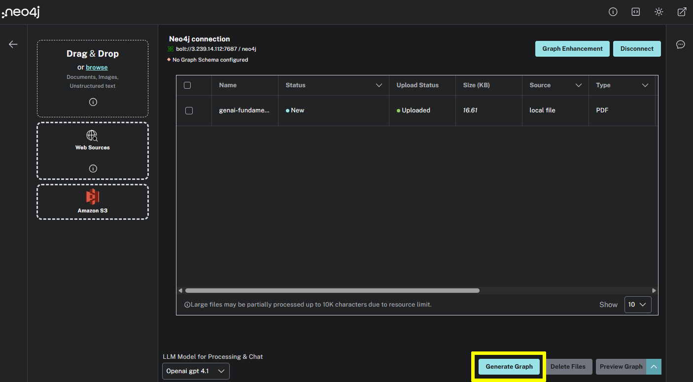
When generating the graph, the LLM Graph Builder runs the steps described in the previous lesson. The application chunks the data, creates vectors, extracts the nodes and relationships, and creates the graph.
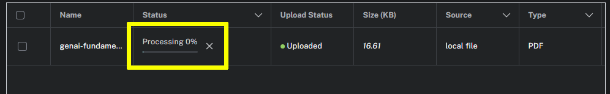
Once the document has completed processing, the knowledge graph will be available for exploration.
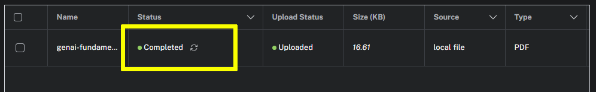
|
Tip
|
Preview
You can preview the graph for a single document by selecting the document and clicking the Preview Graph button. 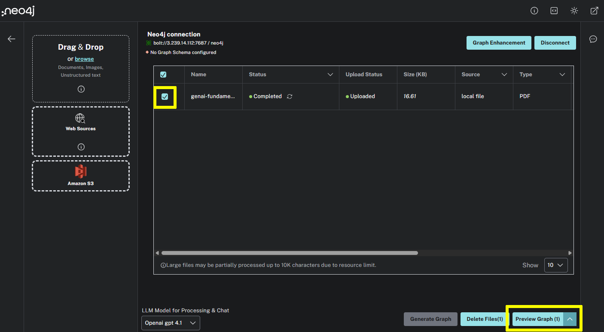 The preview shows the nodes and relationships extracted from the document. 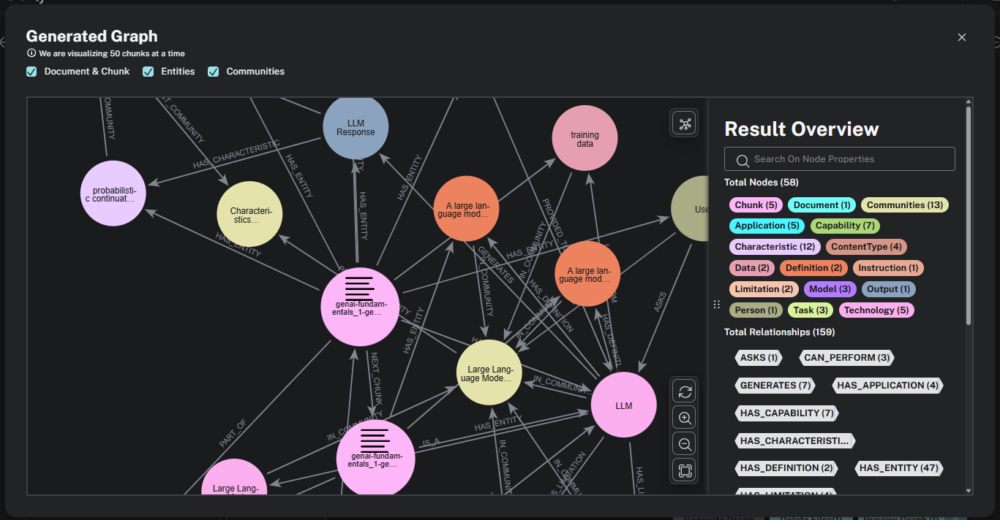 |
Query the Knowledge Graph
You can use the built-in chatbot to ask questions about the document’s content.
The PDF file for lesson 1 contains information about Generative AI, try asking _.
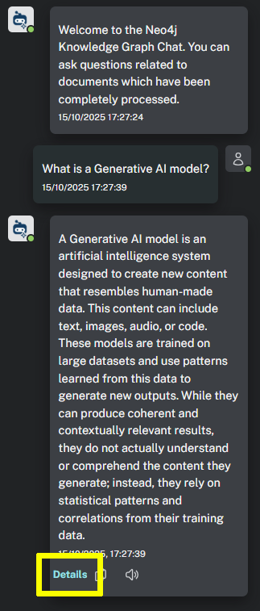
The chatbot will use the knowledge graph to find the answer.
You can see the context used to answer the question in the Details.
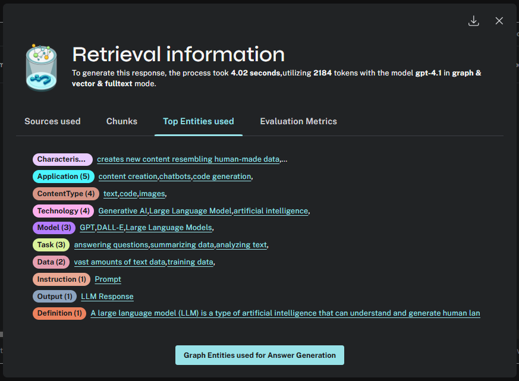
The retrieval information shows the sources, chunks, entities and evaluation used to answer the question.
Review the lesson content, experiment by asking other questions, review the response, and explore the retrieval information.
When you are ready, move on to the next lesson.
read::Continue[]
Summary
In this lesson, you learned how to create a knowledge graph using the Neo4j LLM Graph Builder.
In the next lesson, you will explore and customize the schema.